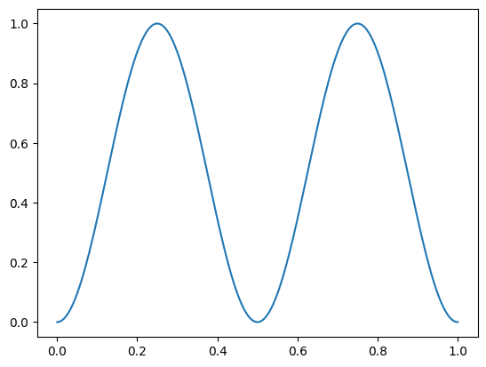
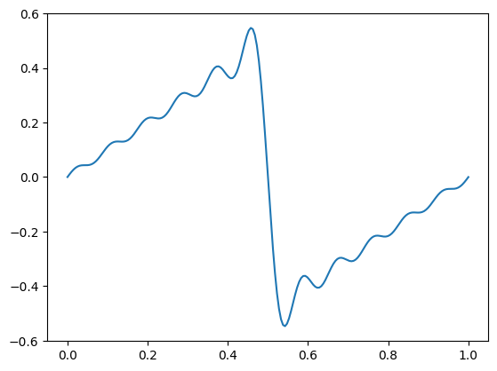

import numpy as np
from xarray import Coordinates
from pymor.basic import NumpyMatrixOperator, NumpyVectorSpace, LincombOperator, ExpressionParameterFunctional, Parameters
from pymor.algorithms.timestepping import ImplicitMidpointTimeStepper
import matplotlib.pyplot as plt
from pylgs.pymor.operators import XarrayMatrixOperator
from pylgs.pymor.vectorarrays import XarrayVectorSpace
from pylgs.pymor.timestepping import BDFTimeStepper, AdamsTimeStepperpymor.models
Extended functionality for pyMOR models
Imports
StationaryModel
def StationaryModel(
operator, rhs, output_functional:NoneType=None, products:NoneType=None, error_estimator:NoneType=None,
visualizer:NoneType=None, name:NoneType=None, data:NoneType=None
):
Extend pyMOR’s StationaryModel to include a data attribute for storing, e.g., the model’s grid.
\[\ddot{x}+2\zeta\omega_0 \dot{x} + \omega_0^2 x = 0\]
\[\dot{x}=v\]
\[\dot{v}+2\zeta\omega_0 v + \omega_0^2 x = 0\]
\[u=(x, v)^T\]
\[\dot{u}+ Au= 0\]
\[A = \begin{pmatrix}0 & 1 \\ \omega_0^2 & 2\zeta\omega_0\end{pmatrix}\]
A = NumpyMatrixOperator(np.array([[0., 1.], [1., 1.]]))rhs = NumpyMatrixOperator(np.array([[0.], [0.]]))model = StationaryModel(A, rhs)The evolution of a damped harmonic oscillator is given by \(\ddot{x}+2\zeta\omega_0 \dot{x} + \omega_0^2 x = 0\). Setting \(\dot{x}=v\), we have \(\dot{v}+2\zeta\omega_0 v + \omega_0^2 x = 0\). To write in vector notation, we define \(u=(x, v)^T\). Then the evolution equation is given by \(\dot{u}+ Au=0\), with \(A = \begin{pmatrix}0 & -1 \\ \omega_0^2 & 2\zeta\omega_0\end{pmatrix}\).
dof = Coordinates({'dof': ('dof', ['x', 'v'], {'long_name': "Degrees of freedom"})})
space = XarrayVectorSpace(dof)
A = XarrayMatrixOperator(np.array([[0., -1.], [0., 0.]]), source=space, range=space)
B = XarrayMatrixOperator(np.array([[0., 0.], [1., 0.]]), source=space, range=space)
C = XarrayMatrixOperator(np.array([[0., 0.], [0., 1.]]), source=space, range=space)
operator = LincombOperator(
[A, B, C],
[
1.,
ExpressionParameterFunctional("w0**2", Parameters({'w0': 1})),
ExpressionParameterFunctional("2*w0*c", Parameters({'w0': 1, 'c': 1}))
]
)
rhs = space.from_numpy(np.array([[0], [0.]]))model = StationaryModel(operator, rhs)StationaryModel.solve
def solve(
mu:NoneType=None, input:NoneType=None, return_error_estimate:bool=False, kwargs:VAR_KEYWORD
):
Extend StationaryModel.solve to solve over a range of parameters.
model.solve({'w0': 1, 'c':.1})∅ ⛒ dof(2)
<xarray.DataArray (dof: 2)> Size: 16B array([ 0., -0.]) Coordinates: * dof (dof) <U1 8B 'x' 'v'
model.solve([{'w0': 1}, {'c':np.linspace(.5, 1., 3)}])c(3) ⛒ dof(2)
<xarray.DataArray (c: 3, dof: 2)> Size: 48B
array([[ 0., -0.],
[ 0., -0.],
[ 0., -0.]])
Coordinates:
* c (c) float64 24B 0.5 0.75 1.0
* dof (dof) <U1 8B 'x' 'v'InstationaryModel
def InstationaryModel(
T, initial_data, operator, rhs, mass:NoneType=None, time_stepper:NoneType=None, num_values:NoneType=None,
output_functional:NoneType=None, products:NoneType=None, error_estimator:NoneType=None, visualizer:NoneType=None,
name:NoneType=None, data:NoneType=None
):
Extend pyMOR’s InstationaryModel to include a data attribute for storing, e.g., the model’s grid.
The evolution of a damped harmonic oscillator is given by \(\ddot{x}+2\zeta\omega_0 \dot{x} + \omega_0^2 x = 0\). Setting \(\dot{x}=v\), we have \(\dot{v}+2\zeta\omega_0 v + \omega_0^2 x = 0\). To write in vector notation, we define \(u=(x, v)^T\). Then the evolution equation is given by \(\dot{u}+ Au=0\), with \(A = \begin{pmatrix}0 & -1 \\ \omega_0^2 & 2\zeta\omega_0\end{pmatrix}\).
dof = Coordinates({'dof': ('dof', ['x', 'v'], {'long_name': "Degrees of freedom"})})
space = XarrayVectorSpace(dof)
A = XarrayMatrixOperator(np.array([[0., -1.], [0., 0.]]), source=space, range=space)
B = XarrayMatrixOperator(np.array([[0., 0.], [1., 0.]]), source=space, range=space)
C = XarrayMatrixOperator(np.array([[0., 0.], [0., 1.]]), source=space, range=space)
operator = LincombOperator(
[A, B, C],
[
1.,
ExpressionParameterFunctional("w0**2", Parameters({'w0': 1})),
ExpressionParameterFunctional("2*w0*c", Parameters({'w0': 1, 'c': 1}))
]
)
rhs = space.from_numpy(np.array([[0], [0.]]))initial_data = space.from_numpy(np.array([1., 0.]))
T = 200instationary = InstationaryModel(T, initial_data, operator, rhs, time_stepper=AdamsTimeStepper(), num_values=1000)instationary_sol = instationary.solve(dict(c=.4, w0="sin(t)"))instationary_sol.visualize()Unable to display output for mime type(s): application/vnd.plotly.v1+json# A = NumpyMatrixOperator(np.array([[0., -1.], [1., 0]]))
# B = NumpyMatrixOperator(np.array([[0., 0.], [0., 1.]]))
# operator = LincombOperator(
# [A, B],
# [
# ExpressionParameterFunctional("w0**2", Parameters({'w0': 1})),
# ExpressionParameterFunctional("w0*c", Parameters({'c': 1, 'w0': 1}))
# ]
# )
# rhs = NumpyMatrixOperator(np.array([[.1], [0.]]))
# space = NumpyVectorSpace(2)
# initial_data = space.from_numpy(np.array([1., 0.]))
# T = 200
# model = InstationaryModel(T, initial_data, operator, rhs, time_stepper=ImplicitMidpointTimeStepper(1000))
# sol = model.solve(dict(c=.1, w0="sin(t)"))
# plt.plot(np.linspace(0, T, len(sol)), sol.to_numpy().T)
# dof = Coordinates({'dof': ('dof', ['x', 'v'], {'long_name': "Degrees of freedom"})})
# space = XarrayVectorSpace(dof)
# A = XarrayMatrixOperator(np.array([[0., -1.], [1., 0]]), source=space, range=space)
# B = XarrayMatrixOperator(np.array([[0., 0.], [0., 1.]]), source=space, range=space)
# operator = LincombOperator(
# [A, B],
# [
# ExpressionParameterFunctional("w0**2", Parameters({'w0': 1})),
# ExpressionParameterFunctional("c", Parameters({'c': 1}))
# ]
# )
# rhs = space.from_numpy(np.array([[.1], [0.]]))
# initial_data = space.from_numpy(np.array([1., 0.]))
# T = 200
# instationary = InstationaryModel(T, initial_data, operator, rhs, time_stepper=AdamsTimeStepper(), num_values=1000)
# instationary_sol = instationary.solve(dict(c=.1, w0="sin(t)"))
# instationary_sol.visualize()Consider a vector differential equation for \(y_i(t)\): \[\dot{y}_i(t)=A_{ij}(\omega t)y_j(t) + b_{i},\] where \(b_i\) is a constant vector and \(A_{ij}(\omega t)\) is a matrix that varies periodically with \(t\) at frequency \(\omega\). We approximate \(A\) by a Fourier series of order \(\ell\): \[A(\omega t)\approx\sum_{k=-\ell}^{\ell}A_k e^{ik\omega t}.\]
We are interested in solutions that are periodic in time, so we can expand \(y_i(t)\) in a Fourier series: \[y_i(t)=\sum_{n=-\infty}^{\infty}y_{ni}e^{in\omega t}.\] Substituting into the evolution equation, we have \[\sum_{n=-\infty}^{\infty}in\omega y_{ni}e^{in\omega t}=\sum_{k=-\ell}^{\ell}A_{kij}e^{ik\omega t}\sum_{m=-\infty}^{\infty}y_{mj}e^{im\omega t} + b_{i}.\] Let \(n=k+m\) on the right hand side of the equation. We can then rearrange to find \[\sum_{n=-\infty}^{\infty}in\omega y_{ni}e^{in\omega t}=\sum_{n-m=-\ell}^{\ell}A_{n-m,ij}e^{i(n-m)\omega t}\sum_{m=-\infty}^{\infty}y_{mj}e^{im\omega t} + b_{i}.\]
\[\sum_{nm}in\omega\delta_{nm}y_{ni}e^{in\omega t}=\sum_{nm}A_{n-m,ij}e^{in\omega t}y_{mj} + b_{i}.\]
\[\sum_{nm}(in\omega\delta_{nm}y_{ni}-A_{n-m,ij}y_{mj}) e^{in\omega t} = b_{i}.\]
\[\sum_{nm}(in\omega\delta_{nm}\delta_{ij}-A_{n-m,ij})y_{mj}e^{in\omega t} = b_{i}.\]
Equating terms gives \[(D_{nmij}-A_{n-m,ij})y_{mj}= \delta_nb_{i},\] with \[D_{nmij}=in\omega\delta_{nm}\delta_{ij}\]
fourier_space
def fourier_space(
n
):
to_sympy
def to_sympy(
functional
):
to_sympy(ProductParameterFunctional([ExpressionParameterFunctional("3*a", {'a': 1}), 4., 5.]))\(\displaystyle 60.0 a\)
sy.symbols(['t', 'nu'])[t, nu]fourier_series
def fourier_series(
expr, n, t:str='t', nu:str='nu'
):
mu=dict(w0="sin(nu*t)")operator = operator.partial_assemble(Mu({'c': .1}))expr = to_sympy(operator.coefficients[1]).subs(mu)
expr\(\displaystyle \sin^{2}{\left(\nu t \right)}\)
operator.coefficients[1]ExpressionParameterFunctional('w0**2', {w0: 1})n_operator = 4
n_vector = 5series = fourier_series(expr, 5)
series\(\displaystyle - \frac{e^{2 i t}}{4} + \frac{1}{2} - \frac{e^{- 2 i t}}{4}\)
t=np.linspace(0, 1, 200)
plt.plot(t, [complex(series.subs(dict(t=2*np.pi*t))).real for t in t])
expr = ExpressionParameterFunctional("nu*t/(2*pi)", {'nu': 1, 't': 1})saw_series = fourier_series(to_sympy(expr), 10)
saw_series\(\displaystyle - \frac{i e^{11 i t}}{22 \pi} + \frac{i e^{10 i t}}{20 \pi} - \frac{i e^{9 i t}}{18 \pi} + \frac{i e^{8 i t}}{16 \pi} - \frac{i e^{7 i t}}{14 \pi} + \frac{i e^{6 i t}}{12 \pi} - \frac{i e^{5 i t}}{10 \pi} + \frac{i e^{4 i t}}{8 \pi} - \frac{i e^{3 i t}}{6 \pi} + \frac{i e^{2 i t}}{4 \pi} - \frac{i e^{i t}}{2 \pi} + \frac{i e^{- i t}}{2 \pi} - \frac{i e^{- 2 i t}}{4 \pi} + \frac{i e^{- 3 i t}}{6 \pi} - \frac{i e^{- 4 i t}}{8 \pi} + \frac{i e^{- 5 i t}}{10 \pi} - \frac{i e^{- 6 i t}}{12 \pi} + \frac{i e^{- 7 i t}}{14 \pi} - \frac{i e^{- 8 i t}}{16 \pi} + \frac{i e^{- 9 i t}}{18 \pi} - \frac{i e^{- 10 i t}}{20 \pi} + \frac{i e^{- 11 i t}}{22 \pi}\)
t=np.linspace(0, 1, 200)
plt.plot(t, [complex(saw_series.subs(dict(t=2*np.pi*t))).real for t in t])
fourier_series_coefficients
def fourier_series_coefficients(
series:Expr, n:int, t:str='t'
):
Returns the positive and negative Fourier series coefficients up to and including order n.
fourier_series_coefficients(series, 3)array([0, -1/4, 0, 1/2, 0, -1/4, 0], dtype=object)fourier_series_coefficients(saw_series, 3)array([I/(6*pi), -I/(4*pi), I/(2*pi), 0, -I/(2*pi), I/(4*pi), -I/(6*pi)],
dtype=object)fourier_expansion_operator
def fourier_expansion_operator(
coefficient, n_operator, n_vector, mu:dict=None, t:str='t', nu:str='nu'
)->ndarray:
Coefficients of complex Fourier series of expr in variable t at frequency nu.
Assumes that either the coefficients are numerical, or there is only the zero-order coefficient. Could be useful to generalize.
fourier_expansion_operator(operator.coefficients[0], n_operator, n_vector, mu)-
- LincombOperator
- Fourier coefficient(11) → Fourier coefficient(11)
- []
-
- IdentityOperator
- Fourier coefficient(11) → Fourier coefficient(11)
- []
fourier_expansion_operator(operator.coefficients[1], n_operator, n_vector, mu)-
- XarrayMatrixOperator
- Fourier coefficient(11) → Fourier coefficient(11)
- []
<xarray.DataArray (Fourier coefficient (range): 11, Fourier coefficient (source): 11)> Size: 928B <COO: shape=(11, 11), dtype=complex128, nnz=29, fill_value=0j> Coordinates: * Fourier coefficient (range) (Fourier coefficient (range)) int64 88B -5 ... * Fourier coefficient (source) (Fourier coefficient (source)) int64 88B -5...
operator.coefficients[2]ExpressionParameterFunctional('0.2*w0', {w0: 1})fourier_expansion_operator(operator.coefficients[2], n_operator, n_vector, mu)-
- XarrayMatrixOperator
- Fourier coefficient(11) → Fourier coefficient(11)
- []
<xarray.DataArray (Fourier coefficient (range): 11, Fourier coefficient (source): 11)> Size: 640B <COO: shape=(11, 11), dtype=complex128, nnz=20, fill_value=0j> Coordinates: * Fourier coefficient (range) (Fourier coefficient (range)) int64 88B -5 ... * Fourier coefficient (source) (Fourier coefficient (source)) int64 88B -5...
fourier_expand
FourierExpandRules
def FourierExpandRules(
n_operator:int, n_vector:int, mu:dict | None=None, t:str='t', nu:str='nu'
):
|RuleTable| to Fourier expand an operator.
fourier_expand
def fourier_expand(
obj, n_operator:int, n_vector:int, mu:dict | None=None, t:str='t', nu:str='nu'
):
fourier_expand(operator, n_operator, n_vector, mu=mu)-
- LincombOperator
- Fourier coefficient(11) ⛒ dof(2) → Fourier coefficient(11) ⛒ dof(2)
- []
-
- ProductOperator
- Fourier coefficient(11) ⛒ dof(2) → Fourier coefficient(11) ⛒ dof(2)
- []
-
- LincombOperator
- Fourier coefficient(11) → Fourier coefficient(11)
- []
-
- IdentityOperator
- Fourier coefficient(11) → Fourier coefficient(11)
- []
⛒
-
- XarrayMatrixOperator
- dof(2) → dof(2)
- []
<xarray.DataArray (dof (range): 2, dof (source): 2)> Size: 32B array([[ 0., -1.], [ 0., 0.]]) Coordinates: * dof (range) (dof (range)) <U1 8B 'x' 'v' * dof (source) (dof (source)) <U1 8B 'x' 'v'
+
-
- ProductOperator
- Fourier coefficient(11) ⛒ dof(2) → Fourier coefficient(11) ⛒ dof(2)
- []
-
- XarrayMatrixOperator
- Fourier coefficient(11) → Fourier coefficient(11)
- []
<xarray.DataArray (Fourier coefficient (range): 11, Fourier coefficient (source): 11)> Size: 928B <COO: shape=(11, 11), dtype=complex128, nnz=29, fill_value=0j> Coordinates: * Fourier coefficient (range) (Fourier coefficient (range)) int64 88B -5 ... * Fourier coefficient (source) (Fourier coefficient (source)) int64 88B -5...
⛒
-
- XarrayMatrixOperator
- dof(2) → dof(2)
- []
<xarray.DataArray (dof (range): 2, dof (source): 2)> Size: 32B array([[0., 0.], [1., 0.]]) Coordinates: * dof (range) (dof (range)) <U1 8B 'x' 'v' * dof (source) (dof (source)) <U1 8B 'x' 'v'
+
-
- ProductOperator
- Fourier coefficient(11) ⛒ dof(2) → Fourier coefficient(11) ⛒ dof(2)
- []
-
- XarrayMatrixOperator
- Fourier coefficient(11) → Fourier coefficient(11)
- []
<xarray.DataArray (Fourier coefficient (range): 11, Fourier coefficient (source): 11)> Size: 640B <COO: shape=(11, 11), dtype=complex128, nnz=20, fill_value=0j> Coordinates: * Fourier coefficient (range) (Fourier coefficient (range)) int64 88B -5 ... * Fourier coefficient (source) (Fourier coefficient (source)) int64 88B -5...
⛒
-
- XarrayMatrixOperator
- dof(2) → dof(2)
- []
<xarray.DataArray (dof (range): 2, dof (source): 2)> Size: 32B array([[0., 0.], [0., 1.]]) Coordinates: * dof (range) (dof (range)) <U1 8B 'x' 'v' * dof (source) (dof (source)) <U1 8B 'x' 'v'
fourier_diagonal_operator
def fourier_diagonal_operator(
vec
):
d_term
def d_term(
n_vector:int, nu:str='nu'
):
d_term(n_vector)-
- LincombOperator
- Fourier coefficient(11) → Fourier coefficient(11)
- ['nu']
-
- XarrayMatrixOperator
- Fourier coefficient(11) → Fourier coefficient(11)
- []
<xarray.DataArray (Fourier coefficient (range): 11, Fourier coefficient (source): 11)> Size: 160B <COO: shape=(11, 11), dtype=float64, nnz=10, fill_value=0.0> Coordinates: * Fourier coefficient (range) (Fourier coefficient (range)) int64 88B -5 ... * Fourier coefficient (source) (Fourier coefficient (source)) int64 88B -5...
floquet_expand
def floquet_expand(
op, n_operator, n_vector, mu:dict=None, t:str='t', nu:str='nu'
):
floquet_expand(operator, n_operator, n_vector, mu)-
- LincombOperator
- Fourier coefficient(11) ⛒ dof(2) → Fourier coefficient(11) ⛒ dof(2)
- ['nu']
-
- ProductOperator
- Fourier coefficient(11) ⛒ dof(2) → Fourier coefficient(11) ⛒ dof(2)
- ['nu']
-
- LincombOperator
- Fourier coefficient(11) → Fourier coefficient(11)
- ['nu']
-
- XarrayMatrixOperator
- Fourier coefficient(11) → Fourier coefficient(11)
- []
<xarray.DataArray (Fourier coefficient (range): 11, Fourier coefficient (source): 11)> Size: 160B <COO: shape=(11, 11), dtype=float64, nnz=10, fill_value=0.0> Coordinates: * Fourier coefficient (range) (Fourier coefficient (range)) int64 88B -5 ... * Fourier coefficient (source) (Fourier coefficient (source)) int64 88B -5...
⛒
-
- IdentityOperator
- dof(2) → dof(2)
- []
+
-
- ProductOperator
- Fourier coefficient(11) ⛒ dof(2) → Fourier coefficient(11) ⛒ dof(2)
- []
-
- LincombOperator
- Fourier coefficient(11) → Fourier coefficient(11)
- []
-
- IdentityOperator
- Fourier coefficient(11) → Fourier coefficient(11)
- []
⛒
-
- XarrayMatrixOperator
- dof(2) → dof(2)
- []
<xarray.DataArray (dof (range): 2, dof (source): 2)> Size: 32B array([[ 0., -1.], [ 0., 0.]]) Coordinates: * dof (range) (dof (range)) <U1 8B 'x' 'v' * dof (source) (dof (source)) <U1 8B 'x' 'v'
+
-
- ProductOperator
- Fourier coefficient(11) ⛒ dof(2) → Fourier coefficient(11) ⛒ dof(2)
- []
-
- XarrayMatrixOperator
- Fourier coefficient(11) → Fourier coefficient(11)
- []
<xarray.DataArray (Fourier coefficient (range): 11, Fourier coefficient (source): 11)> Size: 928B <COO: shape=(11, 11), dtype=complex128, nnz=29, fill_value=0j> Coordinates: * Fourier coefficient (range) (Fourier coefficient (range)) int64 88B -5 ... * Fourier coefficient (source) (Fourier coefficient (source)) int64 88B -5...
⛒
-
- XarrayMatrixOperator
- dof(2) → dof(2)
- []
<xarray.DataArray (dof (range): 2, dof (source): 2)> Size: 32B array([[0., 0.], [1., 0.]]) Coordinates: * dof (range) (dof (range)) <U1 8B 'x' 'v' * dof (source) (dof (source)) <U1 8B 'x' 'v'
+
-
- ProductOperator
- Fourier coefficient(11) ⛒ dof(2) → Fourier coefficient(11) ⛒ dof(2)
- []
-
- XarrayMatrixOperator
- Fourier coefficient(11) → Fourier coefficient(11)
- []
<xarray.DataArray (Fourier coefficient (range): 11, Fourier coefficient (source): 11)> Size: 640B <COO: shape=(11, 11), dtype=complex128, nnz=20, fill_value=0j> Coordinates: * Fourier coefficient (range) (Fourier coefficient (range)) int64 88B -5 ... * Fourier coefficient (source) (Fourier coefficient (source)) int64 88B -5...
⛒
-
- XarrayMatrixOperator
- dof(2) → dof(2)
- []
<xarray.DataArray (dof (range): 2, dof (source): 2)> Size: 32B array([[0., 0.], [0., 1.]]) Coordinates: * dof (range) (dof (range)) <U1 8B 'x' 'v' * dof (source) (dof (source)) <U1 8B 'x' 'v'
_kron_vector(fourier_space(n_vector)) * rhs∅ ⛒ Fourier coefficient(11) ⛒ dof(2)
<xarray.DataArray (Fourier coefficient: 11, dof: 2)> Size: 176B
array([[0., 0.],
[0., 0.],
[0., 0.],
[0., 0.],
[0., 0.],
[0., 0.],
[0., 0.],
[0., 0.],
[0., 0.],
[0., 0.],
[0., 0.]])
Coordinates:
* Fourier coefficient (Fourier coefficient) int64 88B -5 -4 -3 -2 ... 2 3 4 5
* dof (dof) <U1 8B 'x' 'v'time_space
def time_space(
time
):
floquet_reconstruction_array
def floquet_reconstruction_array(
n_vector, time, mu
):
floquet_reconstruction_array(2, np.linspace(0, 1, 3), Mu(nu=1.))<xarray.DataArray (Time: 3, Fourier coefficient: 5)> Size: 240B
array([[ 1. +0.j , 1. +0.j ,
1. +0.j , 1. +0.j ,
1. +0.j ],
[ 0.54030231+0.84147098j, 0.87758256+0.47942554j,
1. +0.j , 0.87758256-0.47942554j,
0.54030231-0.84147098j],
[-0.41614684+0.90929743j, 0.54030231+0.84147098j,
1. +0.j , 0.54030231-0.84147098j,
-0.41614684-0.90929743j]])
Coordinates:
* Time (Time) float64 24B 0.0 0.5 1.0
* Fourier coefficient (Fourier coefficient) int64 40B -2 -1 0 1 2floquet_reconstruction_operator
def floquet_reconstruction_operator(
n_vector, time
):
op = floquet_reconstruction_operator(n_vector, np.linspace(0, 1, 3))op.assemble(Mu(nu=1))-
- XarrayMatrixOperator
- Fourier coefficient(11) → Time(3)
- []
<xarray.DataArray (Time (range): 3, Fourier coefficient (source): 11)> Size: 528B array([[ 1. +0.j , 1. +0.j , 1. +0.j , 1. +0.j , 1. +0.j , 1. +0.j , 1. +0.j , 1. +0.j , 1. +0.j , 1. +0.j , 1. +0.j ], [-0.80114362+0.59847214j, -0.41614684+0.90929743j, 0.0707372 +0.99749499j, 0.54030231+0.84147098j, 0.87758256+0.47942554j, 1. +0.j , 0.87758256-0.47942554j, 0.54030231-0.84147098j, 0.0707372 -0.99749499j, -0.41614684-0.90929743j, -0.80114362-0.59847214j], [ 0.28366219-0.95892427j, -0.65364362-0.7568025j , -0.9899925 +0.14112001j, -0.41614684+0.90929743j, 0.54030231+0.84147098j, 1. +0.j , 0.54030231-0.84147098j, -0.41614684-0.90929743j, -0.9899925 -0.14112001j, -0.65364362+0.7568025j , 0.28366219+0.95892427j]]) Coordinates: * Time (range) (Time (range)) float64 24B 0.0 0.5 1.0 * Fourier coefficient (source) (Fourier coefficient (source)) int64 88B -5...
StationaryFloquetModel
def StationaryFloquetModel(
operator, # System evolution operator
rhs, # System right-hand side vector
mu, # Parameter specification for parameters modulated at a frequency `nu`
n_vector, # Number of terms in the system Fourier series
time, # Time values for displaying result
nu:str='nu', # Name of the frequency variable
t:str='t', # Name of the time variable
n_operator:NoneType=None, # Number of terms in the operator Fourier series. `None` defaults to `n_vector` - 1
products:NoneType=None, name:NoneType=None, data:NoneType=None, solver:NoneType=None,
preconditioner:NoneType=None
):
A model that solves for the Fourier coefficients of the periodic state of a modulated system.
floquet = StationaryFloquetModel(
operator, #.with_(solver_options={'inverse': {'type': 'scipy_lgmres_spilu'}}),
rhs,
mu,
n_vector,
time=np.linspace(0, 200, 1000)
)vars(floquet.operator){'operators': (ProductOperator(
[LincombOperator(
(XarrayMatrixOperator(
<xarray.DataArray (Fourier coefficient (range): 11,
Fourier coefficient (source): 11)> Size: 160B
<COO: shape=(11, 11), dtype=float64, nnz=10, fill_value=0.0>
Coordinates:
* Fourier coefficient (range) (Fourier coefficient (range)) int64 88B -5 ...
* Fourier coefficient (source) (Fourier coefficient (source)) int64 88B -5...,
source=XarrayVectorSpace(coord_data={Fourier coefficient: (array([-5, -4, -3, -2, -1, 0, 1, 2, 3, 4, 5]),)}),
range=XarrayVectorSpace(coord_data={Fourier coefficient: (array([-5, -4, -3, -2, -1, 0, 1, 2, 3, 4, 5]),)}))),
(ExpressionParameterFunctional('-(1j)*nu', {nu: 1}))),
IdentityOperator(
XarrayVectorSpace(coord_data={dof: (array(['x', 'v'], dtype='<U1'), {'long_name': 'Degrees of freedom'})}))]),
ProductOperator(
[LincombOperator(
(IdentityOperator(
XarrayVectorSpace(coord_data={Fourier coefficient: (array([-5, -4, -3, -2, -1, 0, 1, 2, 3, 4, 5]),)}))),
(1.0)),
XarrayMatrixOperator(
<xarray.DataArray (dof (range): 2, dof (source): 2)> Size: 32B
array([[ 0., -1.],
[ 0., 0.]])
Coordinates:
* dof (range) (dof (range)) <U1 8B 'x' 'v'
* dof (source) (dof (source)) <U1 8B 'x' 'v',
source=XarrayVectorSpace(coord_data={dof: (array(['x', 'v'], dtype='<U1'), {'long_name': 'Degrees of freedom'})}),
range=XarrayVectorSpace(coord_data={dof: (array(['x', 'v'], dtype='<U1'), {'long_name': 'Degrees of freedom'})}))]),
ProductOperator(
[XarrayMatrixOperator(
<xarray.DataArray (Fourier coefficient (range): 11,
Fourier coefficient (source): 11)> Size: 928B
<COO: shape=(11, 11), dtype=complex128, nnz=29, fill_value=0j>
Coordinates:
* Fourier coefficient (range) (Fourier coefficient (range)) int64 88B -5 ...
* Fourier coefficient (source) (Fourier coefficient (source)) int64 88B -5...,
source=XarrayVectorSpace(coord_data={Fourier coefficient: (array([-5, -4, -3, -2, -1, 0, 1, 2, 3, 4, 5]),)}),
range=XarrayVectorSpace(coord_data={Fourier coefficient: (array([-5, -4, -3, -2, -1, 0, 1, 2, 3, 4, 5]),)})),
XarrayMatrixOperator(
<xarray.DataArray (dof (range): 2, dof (source): 2)> Size: 32B
array([[0., 0.],
[1., 0.]])
Coordinates:
* dof (range) (dof (range)) <U1 8B 'x' 'v'
* dof (source) (dof (source)) <U1 8B 'x' 'v',
source=XarrayVectorSpace(coord_data={dof: (array(['x', 'v'], dtype='<U1'), {'long_name': 'Degrees of freedom'})}),
range=XarrayVectorSpace(coord_data={dof: (array(['x', 'v'], dtype='<U1'), {'long_name': 'Degrees of freedom'})}))]),
ProductOperator(
[XarrayMatrixOperator(
<xarray.DataArray (Fourier coefficient (range): 11,
Fourier coefficient (source): 11)> Size: 640B
<COO: shape=(11, 11), dtype=complex128, nnz=20, fill_value=0j>
Coordinates:
* Fourier coefficient (range) (Fourier coefficient (range)) int64 88B -5 ...
* Fourier coefficient (source) (Fourier coefficient (source)) int64 88B -5...,
source=XarrayVectorSpace(coord_data={Fourier coefficient: (array([-5, -4, -3, -2, -1, 0, 1, 2, 3, 4, 5]),)}),
range=XarrayVectorSpace(coord_data={Fourier coefficient: (array([-5, -4, -3, -2, -1, 0, 1, 2, 3, 4, 5]),)})),
XarrayMatrixOperator(
<xarray.DataArray (dof (range): 2, dof (source): 2)> Size: 32B
array([[0., 0.],
[0., 1.]])
Coordinates:
* dof (range) (dof (range)) <U1 8B 'x' 'v'
* dof (source) (dof (source)) <U1 8B 'x' 'v',
source=XarrayVectorSpace(coord_data={dof: (array(['x', 'v'], dtype='<U1'), {'long_name': 'Degrees of freedom'})}),
range=XarrayVectorSpace(coord_data={dof: (array(['x', 'v'], dtype='<U1'), {'long_name': 'Degrees of freedom'})}))])),
'coefficients': (1.0, 1.0, 1.0, 1.0),
'solver': None,
'_name': 'LincombOperator',
'source': XarrayVectorSpace(
coord_data={Fourier coefficient: (array([-5, -4, -3, -2, -1, 0, 1, 2, 3, 4, 5]),),
dof: (array(['x', 'v'], dtype='<U1'), {'long_name': 'Degrees of freedom'})}),
'range': XarrayVectorSpace(
coord_data={Fourier coefficient: (array([-5, -4, -3, -2, -1, 0, 1, 2, 3, 4, 5]),),
dof: (array(['x', 'v'], dtype='<U1'), {'long_name': 'Degrees of freedom'})}),
'linear': True,
'_locked': True}floquet_sol = floquet.solve(dict(nu=1.))
floquet_sol∅ ⛒ Fourier coefficient(11) ⛒ dof(2)
<xarray.DataArray (Fourier coefficient: 11, dof: 2)> Size: 352B
array([[ 0.+0.j, 0.+0.j],
[ 0.+0.j, 0.+0.j],
[ 0.+0.j, 0.+0.j],
[ 0.+0.j, 0.+0.j],
[ 0.+0.j, 0.+0.j],
[ 0.+0.j, -0.-0.j],
[-0.+0.j, -0.+0.j],
[-0.+0.j, -0.+0.j],
[-0.+0.j, -0.+0.j],
[-0.+0.j, -0.+0.j],
[-0.+0.j, -0.+0.j]])
Coordinates:
* Fourier coefficient (Fourier coefficient) int64 88B -5 -4 -3 -2 ... 2 3 4 5
* dof (dof) <U1 8B 'x' 'v'import plotly.graph_objects as gofig1 = floquet.reconstruct(floquet_sol, dict(c=.1, nu=1.)).real.visualize()
fig2 = instationary_sol.visualize()
go.Figure(data=fig1.data + fig2.data).update_layout(xaxis_range=(0, 200))Unable to display output for mime type(s): application/vnd.plotly.v1+json# #|export
# def independent_component(op:LincombOperator, mu:dict):
# return sum(term for term in operator.terms if not set(mu).intersection(term.parameters))
# #|export
# def dependent_component(op:LincombOperator, mu:dict):
# return sum(term for term in operator.terms if set(mu).intersection(term.parameters))
# #| export
# def fourier_coefficients(expr:ExpressionParameterFunctional, n:int, mu:dict=None, t:str='t', nu:str='nu') -> np.ndarray:
# """Coefficients of complex Fourier series of expr in variable `t` at frequency `nu`."""
# if isinstance(expr, ExpressionParameterFunctional): expr = expr.expression
# expr = parse_expr(expr)
# if mu is not None: expr = expr.subs(mu)
# t = sy.Symbol(t)
# series = sy.fourier_series(expr.subs(nu, 1), (t, -sy.pi, sy.pi)).truncate(n=n+1).rewrite(sy.exp).expand()
# return array([series.coeff(sy.exp(sy.I*t), n=k) if k != 0 else series.coeff(t, n=0) for k in range(-n, n+1)]).astype(complex)
# #| export
# def fourier_range_coord(n): return first(Coordinates({'Fourier coefficient (range)': sym_range(n)}).values())
# def fourier_source_coord(n): return first(Coordinates({'Fourier coefficient': sym_range(n)}).values())
# def fourier_operator_coords(n): return (fourier_range_coord(n) * fourier_source_coord(n)).coords
# def fourier_range_space(n): return XarrayVectorSpace(fourier_range_coord(n))
# def fourier_source_space(n): return XarrayVectorSpace(fourier_source_coord(n))
# #| export
# def fourier_expansion_operator(coefficient, n_operator, n_vector, mu=None, t:str='t', nu:str='nu'):
# return XarrayMatrixOperator(
# DataArray(
# sparse_toeplitz(np.pad(fourier_coefficients(coefficient, n=n_operator, mu=mu), n_vector + 1)),
# coords=fourier_operator_coords(n_vector)
# )
# )
# #| export
# def fourier_identity_operator(n_vector):
# return XarrayMatrixOperator(
# DataArray(
# sparse_identity(2*n_vector+1),
# coords=fourier_operator_coords(n_vector)
# )
# )
# #| export
# def fourier_diagonal_operator(vec):
# return XarrayMatrixOperator(
# DataArray(
# sparse_diag(vec),
# coords=fourier_operator_coords((len(vec)-1)//2)
# )
# )
# #| export
# def dm_identity_operator(lgs):
# return XarrayMatrixOperator(DataArray(sparse_identity(lgs.n_variables), lgs.A_ind.operators[0].matrix.coords))
# #| export
# def dm_identity_operator(lgs):
# return XarrayMatrixOperator(DataArray(sparse_identity(lgs.n_variables), lgs.A_ind.operators[0].matrix.coords))
# #| export
# def _da_identity(range_coord, source_coord):
# return DataArray(sparse_identity(len(source_coord)), coords=((range_coord.name, range_coord.data), (source_coord.name, source_coord.data)))
# #| export
# import math
# #| export
# def _identity_operator(range, source):
# return math.prod(XarrayMatrixOperator(_da_identity(r, s)) for r, s in zip(range.coords.values(), source.coords.values()))
# #| export
# def _kron_vector(space): return space.from_numpy((sym_range((space.dim - 1)//2) == 0).astype(int))
# #| export
# def _time_coord(time): return first(Coordinates({'Time': time}).values())
# def _time_space(time): return XarrayVectorSpace(_time_coord(time))
# #| export
# def _floquet_reconstruction_array(n_vector, time, mu):
# return np.exp(
# 1j * ExpressionParameterFunctional('nu', {'nu': 1}).evaluate(mu)
# * _time_coord(time)
# * fourier_source_coord(n_vector)
# )
# #| export
# def floquet_reconstruction(n_vector, time):
# return XarrayFunctionalOperator(
# GenericParameterFunctional(lambda mu: _floquet_reconstruction_array(n_vector, time, mu), {'nu': 1}),
# range=_time_space(time),
# source=fourier_source_space(n_vector),
# )
# #|export
# class StationaryFloquetModel(StationaryModel):
# """A model that solves for the Fourier coefficients of the periodic state of a modulated system."""
# def __init__(
# self,
# operator, # System evolution operator
# rhs, # System right-hand side vector
# mu, # Parameter specification for parameters modulated at a frequency `nu`
# n_vector, # Number of terms in the system Fourier series
# nu='nu', # Name of the frequency variable
# n_operator=None, # Number of terms in the operator Fourier series. `None` defaults to `n_vector` - 1
# products=None,
# name=None,
# data=None
# ):
# if n_operator is None: n_operator = n_vector - 1
# operator = expand(operator)
# A = independent_component(operator, mu)
# B = dependent_component(operator, mu)
# B = simplify_functionals(B)
# B_expanded = sum(fourier_expansion_operator(c, n_operator, n_vector, mu=mu) * o for c, o in zip(B.coefficients, B.operators))
# A_expanded = fourier_identity_operator(n_vector) * A
# D_expanded = (
# ExpressionParameterFunctional(f'-(1j)*{nu}', {nu: 1})
# * (fourier_diagonal_operator(sym_range(n_vector))
# * IdentityOperator(operator.source)
# )
# )
# operator_expanded = (D_expanded + A_expanded + B_expanded).with_(solver_options=operator.solver_options)
# rhs_expanded = _kron_vector(fourier_range_space(n_vector)) * rhs
# self.mu, self.n_vector, self.nu, self.n_operator = mu, n_vector, nu, n_operator
# super().__init__(
# operator_expanded,
# rhs_expanded,
# products=products,
# data=data
# )